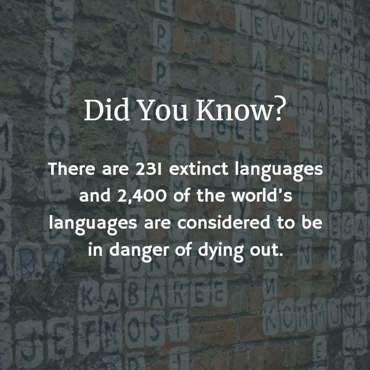

Languages
Every language carries a world.

A language is more than words...
Every language is a way of seeing and describing the world.
Hidden inside words, expressions, names, and stories are pieces of history, culture, and knowledge passed from one generation to another.
Some languages are spoken by millions of people. Others are spoken by only a small number of communities.
Look a little closer... 👀
There are thousands of languages spoken around the world, and they are not all written down in the same way.
Some use familiar alphabets. Others have completely different writing systems, while some languages have traditionally been passed from one generation to another through speech and storytelling.
When a language disappears, we don't lose only words. We can also lose stories, traditions, expressions, and unique ways of understanding the world.
💡 Did you know?
A language can change over time.
New words can appear, old words can disappear, and the way people speak can change from one generation to the next.
Language is alive because people are constantly using it, shaping it, and passing it on.
Sometimes, protecting a language means protecting a piece of history.